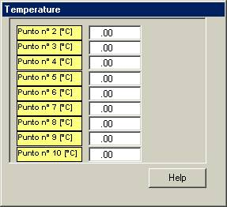
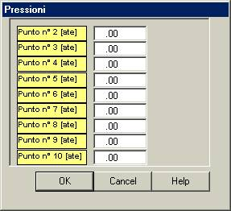

Le curve di riscaldamento o di condensazione possono essere calcolate anche lungo una trasformazione qualsiasi definita nel piano P,T.


Se la trasformazione è diversa da una retta con punti equispaziati, i punti possono essere assegnati tramite le finestre sopra rappresentate.